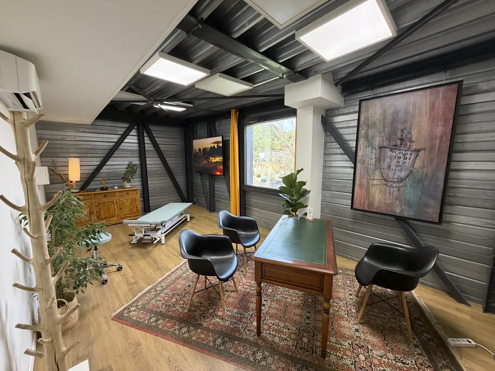
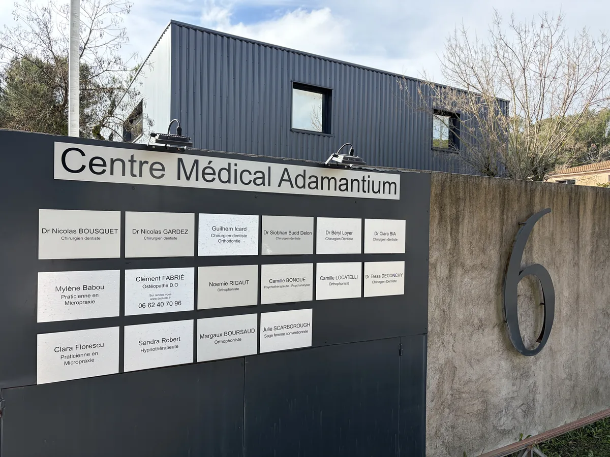
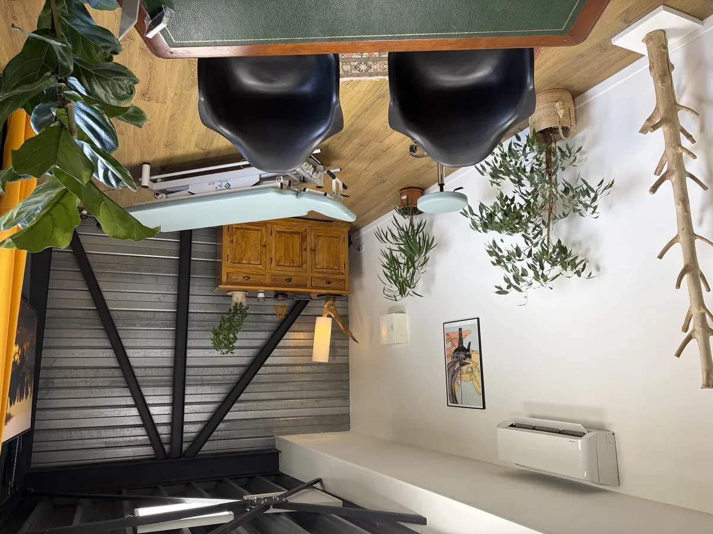

Ostéopathe D.O.
à Clapiers
nord Montpellier
Des soins ostéopathiques basés sur l'écoute et la précision gestuelle, pour soulager vos douleurs de dos, cervicalgies, migraines et troubles fonctionnels durablement.
Consultations
Pour quoi consulter ?
Que vous souffriez d'une douleur aiguë ou chronique, l'ostéopathie peut vous aider. Voici les motifs les plus fréquents.
Dos & Colonne
Lombalgies, douleurs dorsales, sciatique, hernie discale, scoliose fonctionnelle
Nuque & Tête
Cervicalgies, torticolis, maux de tête, migraines, vertiges d'origine cervicale
Membres & Articulations
Entorses, tendinites, douleurs épaule, genou, cheville, hanche, poignet
Mâchoire (ATM)
Douleurs temporo-mandibulaires, bruxisme, claquements articulaires, trismus
Sport & Performance
Prévention des blessures, récupération, préparation physique, périostite, pubalgie
Troubles fonctionnels
Stress, anxiété, troubles digestifs, sinusite, otites récidivantes, fatigue chronique
Selon les besoins de chaque patient, j'utilise des techniques structurelle · tissulaire · viscérale · crânienne · myofasciale

À propos
Clément Fabrié
Diplômé du Conservatoire Supérieur d'Ostéopathie de Toulouse en 2021 (RNCP niveau 7 — équivalent Master), j'exerce en libéral au Cabinet Médical L'Adamantium à Clapiers depuis mes débuts.
Mon approche est fondée sur l'écoute active et la précision gestuelle, en respectant toujours le principe de non-douleur. Je m'adapte à chaque patient — adulte, sportif ou senior — en combinant les techniques les plus adaptées à sa situation.
La consultation
Comment se déroule votre séance ?
Bilan initial
Échange complet sur vos antécédents, vos habitudes de vie et vos douleurs. Chaque consultation est unique et personnalisée.
Examen ostéopathique
Tests de mobilité et palpation pour identifier précisément les zones de tension, de restriction et de déséquilibre.
Traitement manuel
Application de techniques douces adaptées à votre profil. La séance dure 45 à 60 minutes, sans douleur.
Le cabinet
Centre Médical L'Adamantium
Un espace calme et chaleureux à Clapiers, conçu pour votre confort.


FAQ
Questions fréquentes
La consultation est à 60 €. L'ostéopathie n'est pas remboursée par la Sécurité Sociale, mais de nombreuses mutuelles prennent en charge tout ou partie de la séance. Renseignez-vous auprès de votre mutuelle. Paiement accepté en espèces, chèque ou carte bancaire.
Non. L'ostéopathe est un professionnel de santé accessible en accès direct, sans prescription médicale ni ordonnance.
Non. L'approche respecte strictement le principe de non-douleur. Les techniques utilisées (douce, tissulaire, viscérale, crânienne) sont indolores et entièrement adaptées à chaque patient, y compris les personnes fragiles ou douloureuses.
Cela dépend de chaque patient et de la nature du problème. Un problème aigu récent se résout souvent en 1 à 3 séances. Un problème chronique peut nécessiter un suivi plus régulier. Nous en discutons ensemble dès la première consultation.
La première consultation dure environ 60 minutes (bilan + traitement). Les consultations de suivi durent généralement 45 minutes.
Absolument. Beaucoup de patients consultent régulièrement en prévention — sportifs, personnes sédentaires, seniors — pour maintenir leur équilibre postural et prévenir l'apparition de douleurs.
En ligne 24h/24 via Doctolib, ou par téléphone au 06 62 40 70 96 aux heures d'ouverture du cabinet.
Secteur d'intervention
Ostéopathe à Clapiers et dans tout le nord Montpellier
Le cabinet est facilement accessible depuis Clapiers, Castelnau-le-Lez, Jacou, Prades-le-Lez et tout le bassin montpelliérain.
Informations pratiques
Prendre rendez-vous
6 Rue Jean Monnet
34830 Clapiers (nord Montpellier)
Lun · Mer · Ven : 10h00 – 21h00
Mar · Jeu : 15h00 – 21h00
Samedi : 9h00 – 17h00
Parking gratuit · Accessible PMR
Bus lignes 22 et 36